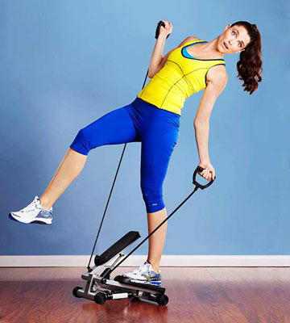
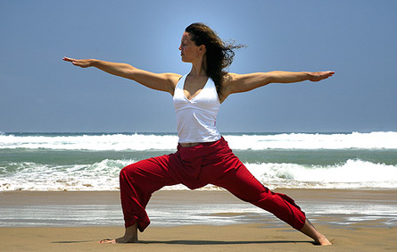

Fitness - Wikipedia, la enciclopedia libre

Fitness
De Wikipedia, la enciclopedia libre Ir a la navegación Ir a la búsqueda En argot científico, « fitness » también puede referirse a la aptitud biológica .Fitness (en español, condición física , forma física o buena forma ) [ 1 ] es un estado general de salud , y en forma más específica se le llama a la capacidad de practicar ciertas actividad físicas , ocupaciones y actividades cotidianas. Una buena forma física por lo general se adquiere como resultado de una nutrición adecuada, [ 2 ] la práctica de ejercicio físico de moderados a vigorosos, [ 3 ] y un descanso apropiado. [ 4 ]
Con anterioridad a la revolución industrial , se definía forma física como la capacidad de realizar las actividades cotidianas sin experimentar fatiga. Sin embargo, con la automatización y los cambios en el estilo de vida en la actualidad se considera que la forma física es una medida de la capacidad del cuerpo de funcionar de forma eficiente y efectiva durante el trabajo y actividades de esparcimiento, estar en condición saludable , ser capaz de resistir enfermedades hipocinéticas, y poder enfrentarse a situaciones de emergencia. [ 5 ]
La salud física es el resultado de la actividad física regular, de una dieta y nutrición apropiadas, además de un descanso apropiado para la recuperación física dentro de los parámetros individuales.
Aunque existen clasificaciones diferentes según distintos autores, el fitness se puede dividir entre diferentes componentes (también llamadas capacidades físicas y cualidades motrices, aunque estos dos términos hacen referencia a distintos elementos) como la flexibilidad, movilidad articular, resistencia cardiovascular , fuerza muscular , resistencia muscular, composición corporal, agilidad , equilibrio, coordinación muscular y velocidad .
Índice
1 Definición 2 Beneficios 2.1 Beneficios para la salud 2.2 Otros beneficios 3 Historia 3.1 El Neolítico y la agricultura 3.2 La antigüedad: entrenamiento para la guerra 3.3 La Edad Media: rechazo del cuerpo 3.4 El Renacimiento: un nuevo comienzo 3.5 Los Tiempos Modernos: entrenarse por el país 3.6 La evolución de la industria del entrenamiento físico 3.7 ¿Cuál es el futuro del Fitness y del entrenamiento físico? 4 Cultura 5 Diferencias con el culturismo 6 Véase también 7 Referencias 8 Enlaces externosDefinición [ editar ]
La palabra fitness proviene del idioma inglés y significa apropiado, apto, listo (para algo).
El término fitness posee dos acepciones diferentes, pero relacionadas entre sí. La primera definición que podemos dar de fitness, es aquella que hace referencia al estado generalizado de bienestar y salud física logrado no solo a partir del desarrollo de una vida sana, sino también y principalmente, del ejercicio continuado y sostenido en el tiempo. La segunda acepción de la palabra es la que señala el tipo de actividades físicas normalmente comprendidas como ‘fitness’ y que se realizan por lo general en espacios deportivos específicos.
En los últimos años, los programas de entrenamiento de estilo militar han llegado a ser cada vez más populares entre los civiles. Hay cursos disponibles por todas partes en EE. UU., Europa y se ha incrementado masivamente en países de América del Sur como Colombia y son impartidos generalmente por personal exmilitar. Muy a menudo, los instructores tuvieron posiciones destacadas dentro de varias organizaciones militares. Frecuentemente, los instructores fueron anteriormente reclutadores (Drill instructor), miembros de las Fuerzas Especiales o de haber tenido otras posiciones distinguidas dentro de la milicia.
Estos cursos siempre tienen algunos elementos comunes, a menudo se enfocan en calistenia de estilo militar y de carreras en grupo. Los cursos a menudo se imparten muy temprano por la mañana y en cualquier época del año. Los alumnos pueden esperar tracciones, sentadillas, flexiones y saltos, así como movimientos más difíciles tales como patadas de ondulación y flares estilo breakdance . Casi invariablemente, un entrenamiento incluirá carreras cortas, mientras las carreras más largas son planificadas . Las fuerzas especiales son renombradas por su nivel de salud y la intensidad de sus entrenamientos.
La actividad física es muy importante cuando se trata de mantenerse saludable. Correr, caminar o hacer deporte 30 minutos al día, puede mejorar tu vida considerablemente. Realizar actividad física regularmente tiene muchos beneficios. Personas que hacen ejercicio al menos 3-4 veces a la semana tienen menos enfermedades y viven más tiempo. Además, el ejercicio físico ayuda a prevenir enfermedades como diabetes, presión arterial alta, enfermedades cardiovasculares y muchas más que últimamente se están convirtiendo en un gran problema social.
Con respecto a los objetivos marcados y establecidos por esta modalidad deportiva como bien se ha mencionado anteriormente sería la de mejorar nuestra resistencia aeróbica, disponer de una mayor flexibilidad, así como conseguir una buena tonificación muscular logrando así un equilibrio corporal. Todos estos objetivos planteados nos ayudarán a conseguir una mejoría en nuestra rutina, además de prevenir ciertas lesiones que puedan aparecer como consecuencia de ciertas acciones.
Beneficios [ editar ]
Son muchos los beneficios que se asocian a una buena condición física o forma física.
Beneficios para la salud [ editar ]
Como consecuencia de la práctica de actividad física de forma moderada en el tiempo conseguiremos ganar en salud al mejorar y aumentar aquellas capacidades de las que carecemos cómo puede ser la flexibilidad, resistencia, coordinación o fuerza.
Mejora de la presión arterial y del corazón. La práctica de actividad física de forma regular puede prevenir la aparición de determinadas enfermedades como la diabetes, la presión arterial alta o aquellas que están relacionadas con las enfermedades cardiovasculares. Reducir las posibilidades de padecer osteoporosis . La aparición de esta enfermedad ósea se ve reducida debido a la estimulación de las células de la estructura ósea, provocando un beneficio y mayor fortalecimiento de nuestros huesos. Control del peso. Por desgracia en España un 13% de la población tiene sobrepeso, siendo el segundo país de Europa con mayor índice de obesidad. Gracias al Fitness se consigue reducir este sobrepeso y la vida sedentaria de los habitantes debido a la práctica de un estilo de vida saludable. Todo ello, conlleva una mejoría y ganancia en salud debido la bajada de peso, lo que hace que ganemos en calidad de vida gracias a la práctica de ejercicio físico junto con una dieta saludable, equilibrada y nutritiva. Relax y bienestar general. Acompañando a lo anteriormente mencionado, también conseguiremos no solo mejorar a nivel físico y motor, sino también a niveles mentales y psicológicos. Como consecuencia de ello, conseguiremos mejorar y reducir nuestros niveles de ansiedad y estrés. Mejoras en la autoestima y el estado de ánimo. Una revisión sistemática de 23 estudios, realizados en Estados Unidos, Canadá, Australia y Nigeria, y cuyos participantes fueron niños y adolescentes entre 3 y 20 años de edad, determinó que las intervenciones de ejercicios físicos tienen efectos positivos sobre la autoestima, al menos en el corto plazo. No hubo diferencias significativas en los efectos según la duración o el tipo de intervención, y dado que no se entregaron resultados de seguimiento, no se conocen los efectos a largo plazo. No obstante, existen varias deficiencias metodológicas y sesgos en los estudios, por lo que se necesitan más investigaciones que proporcionen evidencia más robusta. [ 6 ] Otros beneficios [ editar ]
Aumento del rendimiento deportivo. Además de las mejoras en la salud, la condición física supone la base para el desarrollo de habilidades físicas básicas (como correr, saltar, trepar, lanzar ), y estas de las habilidades físicas específicas de cada deporte. Lograr metas y objetivos. Esta disciplina o mención hace que nos planteemos determinadas metas u objetivos para conseguir aquello que deseamos conseguir. Aunque es cierto, que en ocasiones este factor puede ser negativo, puesto que puede llegar a la obsesión de la persona por conseguir algo fuera de lo saludable mediante el uso de estupefacientes u otros químicos derivados.Historia [ editar ]
La práctica de ejercicio físico o “Fitness” como se conoce actualmente se remonta hace muchos años atrás donde no se consideraba como el desempeño de un trabajo específico, sino como un estilo de vida. Si echamos la vista atrás, podemos apreciar como no disponían de máquinas o aparatos de última generación como de los que disponemos hoy en día para la práctica de ejercicio, y sin embargo se encontraban muchísimo más en forma que actualmente.
Para facilitar y poder entender mejor de dónde proviene la cultura del Fitness, así como el culto por el cuerpo es necesario echar la vista atrás y fijarnos de donde venimos. Desde tiempo inmemorables, el entrenamiento físico y el Fitness en definitiva han estado presentes a lo largo de nuestra historia en todo momento mucho antes de la aparición de los gimnasios, el deporte a domicilio y los entrenamientos personales, pero de una forma muy diferente a la que conocemos actualmente.
Durante los primeros tiempos de la especie humana, la única finalidad y principio era de la moverse para sobrevivir. Debido a ello, el desarrollo físico y muscular de los primeros hombres ha seguido una evolución natural con base en las exigencias presentes en su vida diaria, como consecuencias de los peligros a los que eran sometidos.
Por esta razón, la primera especia humana practicaba deporte sin saberlo, consiguiendo así esculpir su cuerpo sin darse cuenta al tener que aprender a caminar, correr, trepar y saltar entre otras para poder cazar y no ser cazado para poder sobrevivir.
El Neolítico y la agricultura [ editar ]
En torno al 8000 a.C. con la aparición de la agricultura el hombre cazador y recolector del paleolítico pasa a ser agricultor, dejando de lado ciertas acciones como saltar, trepar o correr, para realizar otras más repetitivas y limitadas. A pesar de ello, esto supone la aparición y mejora de otros movimientos más específicos como subir una escalera, lo que supone una mejora de la coordinación en la especie humana.
La antigüedad: entrenamiento para la guerra [ editar ]
Si seguimos avanzando entre el 4000 a. C. y la caída del Imperio Romano en el siglo V, como consecuencia de la guerra y las conquistas fueron muchas las civilizaciones que nacieron y desaparecieron. En cada una de estas civilizaciones todo hombre debería disponer de un buen programa físico con un único objetivo común, entrenarse exclusivamente para la batalla.
De esta manera, los hombres comenzaron a tener una estructura más estructurada y específica centrada principalmente en correr y andar por terrenos complicados, así como saltar, reptar, trepar e incluso luchar con sus propias manos y armas.
Posteriormente en la etapa griega comienza el interés por la belleza y la fuerza del cuerpo considerando el entrenamiento físico como un ideal filosófico y una parte esencial de la educación. Es en esta época cuando surge la famosa frase «mente sana en cuerpo sano» ( Mens sana in corpore sano ). El culto por lo físico empieza a convertirse en un estilo de vida.
La Edad Media: rechazo del cuerpo [ editar ]
Entre los siglos V y XV, tiene lugar un cambio de mentalidad, ya que se llega a la convicción de la vida terrenal nos prepara para una vida en el más allá. Debido a ello, la educación se orienta a la formación de la mente, dejando de lado la del cuerpo.
Por otro lado, la alta nobleza si seguían sometiéndose a un entrenamiento físico centrado en el servicio militar, mientras que el resto de la población simplemente se ejercitaba mediante el duro trabajo que realizaban, mayoritariamente en el campo.
El Renacimiento: un nuevo comienzo [ editar ]
Con la llegada del Renacimiento comprendido entre 1400 y 1600 regresa el interés por el cuerpo humano desde un punto de vista anatómico, biológico, así como de la salud y la educación física.
En 1420, se abrió la primera escuela centrada únicamente en la educación física de la mano del humanista italiano Victorin de Feltre, considerado uno de los primeros educadores contemporáneos.
Posteriormente en 1553, surgen los primeros libros dedicados por completo al ejercicio físico y sus beneficios como son «El libro del ejercicio corporal y sus provechos» del español Cristóbal Méndez o «De Arte Gymnastica», publicada por Mercurialis, un médico italiano.
Los Tiempos Modernos: entrenarse por el país [ editar ]
Con la Revolución Industrial la población se vuelve más sedentaria y surge un nuevo movimiento: la práctica intencionada del ejercicio físico, gracias principalmente al fervor nacionalista.
Debido a esto, se llevan a cabo diferentes iniciativas por toda Europa con el fin de realizar ejercicio por puro placer con el objetivo de mejorar su estado de forma:
En Alemania, Johann Bernard Basedow abre una escuela que se centra en los juegos y en el ejercicio físico con prácticas como la lucha, las carreras, la equitación, la esgrima y la danza. Incluso se aligera la vestimenta para estar más cómodo y tener una mayor libertad de movimiento.
En Suecia, Per Henrik Ling elabora los principios del desarrollo físico centrándose en la integración del desarrollo corporal con la belleza muscular. Inventa el concepto de «gimnasia suave» mediante la gimnasia, la respiración, los ejercicios de estiramiento y los masajes.
En España, Francisco Amorós funda una escuela militar y después una escuela civil y militar y publica una guía de ejercicio físico, gimnasia y educación moral.
En Francia, Hippolyte Triat funda el primer gimnasio donde burgueses, aristócratas y jóvenes se reunían para practicar lo más parecido al fitness de hoy en día.
Los Estados Unidos no se quedan atrás con Catharine Beecher, que fue una de las pioneras en sensibilizar al pueblo sobre la condición física. Desarrolló un programa de gimnasia que se realizaba con música.
La evolución de la industria del entrenamiento físico [ editar ]
A comienzo del siglo XX, el fitness se centra en otro enfoque más orientado en la resistencia. A partir de aquí, la industria del fitness y el entrenamiento físico en España y el resto del mundo se va extendido poco a poco.
Este siglo queda marcado por un concepto competitivo y de un deporte más especializado, como consecuencia e interés por un mercado de un fitness organizado, estructurado y próspero.
El profesor Edmond Desbonnet incita a la población a realizar deporte y a preocuparse por los hábitos saludables. Para ello, lleva a cabo publicaciones en diferentes revistas con fotos de atletas masculinos y femeninos, así como la apertura de diversos clubs deportivos con los que se promueve el movimiento del fitness.
Otro gran precursor de la industria del fitness fue el americano McFadden, quien se convirtió literalmente en un gurú de la cultura física en Estados Unidos y en un arduo defensor de la vida sana, un estilo de vida minimalista basado en el tiempo pasado en la naturaleza y en el ejercicio físico diario, así como en tener un estilo de vida saludable.
¿Cuál es el futuro del Fitness y del entrenamiento físico? [ editar ]
El auge de la industria del fitness y el entrenamiento personal se consigue con la llegada del culturismo. Época en las que el uso de los gimnasios, métodos innovadores de Pilates, así como revistas, vídeos o libros relacionados con el mundo del movimiento y la actividad física.
Actualmente cabe la posibilidad de contar con un preparador físico cualificado para entrenar personalmente. Además, también se pueden realizar actividades en grupos reducidos, así como recibir consejos nutricionales por parte del entrenador paras conseguir aquellos objetivos que uno se marque.
Otra opción disponible para aquellos que pretenden entrenar por su cuenta y que son amantes de las nuevas tecnologías existen unas pulseras o relojes de actividad que pueden conectarse con cualquier dispositivo y que nos indican el número de pasos, tu ritmo cardíaco, la calidad de tu sueño y si debes consumir más o menos cierto tipo de alimentos.
Lo más novedoso y potenciado hoy en día son los asesoramientos en línea con los que puedes entrenar de forma virtual con clientes de otras ciudades o países. De esta forma podrás entrenar en casa o en gimnasio en función a la disponibilidad del cliente. Con la llegada del internet, esto ha supuesto una auténtica revolución de esta disciplina.
Cultura [ editar ]
Durante la última década, el sector del fitness se ha visto beneficiado por el aumento de la práctica deportiva entre el público femenino. Este hecho ha favorecido la expansión de los gimnasios para mujeres, que continúan aumentando en número de locales y de usuarias abonadas.
Algunas de las principales razones por las que triunfan este tipo de gimnasios están relacionadas con las diferencias a nivel morfológico, metabólico y hormonal. De ahí que las rutinas de entrenamiento y las máquinas utilizadas en estos centros estén específicamente diseñadas y adaptadas a las mujeres.
Otros motivos que han propiciado el éxito de los clubs de fitness para ellas tienen que ver con la comodidad y la intimidad. La mayoría de mujeres prefieren entrenar rodeadas de otras mujeres, dejando a un lado los complejos sobre su propio físico y sin sentirse observadas por hombres.
El estilo de vida fitness no se ve limitado a chicas jóvenes atletas únicamente. Encontramos que se han unido a esta gran comunidad mujeres de todas las edades y condiciones físicas, que buscan cuidarse y mantenerse en forma.
En países como Estados Unidos , existen competencias de salud y figura físico para mujeres que en parte han desplazado al culturismo femenino, haciendo más énfasis en la figura femenina y menos en el tamaño de los músculos. Estas competencias se tienen con frecuencia como partes de un mismo acontecimiento en concursos de culturismo.
Las categorías fitness y figura están separadas, mientras que en la categoría fitness las competidoras han de realizar una serie de ejercicios, en figura la competición es puramente estética. Sin embargo, las pautas del físico son semejantes y muchas mujeres cruzan de una a la otra.
Diferencias con el culturismo [ editar ]
El fitness se suele confundir con el culturismo, que aunque guarda ciertas similitudes, se diferencian principalmente en los fines previstos:
El fitness algunas veces está destinado a la pérdida de grasa corporal. En cambio en el culturismo se requiere el aumento de la masa corporal ( hipertrofia muscular). Las rutinas de fitness consisten en ejercicios aeróbicos combinados con anaeróbicos, mientras que en el culturismo principalmente son ejercicios anaeróbicos de fuerza. También varían el tiempo, las repeticiones, la intensidad, tipo de ejercicios y la planificación de las rutinas. El fitness consiste en la mejora del cuerpo para entrenar los músculos, hay muchas diferencias entre el fitness y el culturismo o fisioculturismo. El culturismo se centra en la mejora de los músculos.Véase también [ editar ]
Ejercicio físico Ejercicio aeróbico Ejercicio anaeróbico CrossFit Zumba Pilates YogaReferencias [ editar ]
↑ «fitness» . www.fundeu.es . Consultado el 23 de agosto de 2020 . ↑ Tremblay, Mark Stephen; Colley, Rachel Christine; Saunders, Travis John; Healy, Genevieve Nissa; Owen, Neville (2010). «Physiological and health implications of a sedentary lifestyle». Applied Physiology, Nutrition, and Metabolism 35 (6): 725-740. doi : 10.1139/H10-079 . ↑ de Groot, Gudrun Cathrine Lindgren; Fagerström, Lisbeth (14 de junio de 2010). «Older adults' motivating factors and barriers to exercise to prevent falls». Scandinavian Journal of Occupational Therapy 18 (2): 153-160. PMID 20545467 . doi : 10.3109/11038128.2010.487113 . ↑ Malina, R (2010). Physical activity and health of youth . Constanta: Ovidius University Annals, Series Physical Education and Sport/Science, Movement and Health. ↑ «President's Council on Physical Fitness and Sports Definitions for Health, Fitness, and Physical Activity» . fitness.gov. Archivado desde el original el 12 de julio de 2012. ↑ Chukwudozie, A., & White, H. (18 de diciembre de 2018). «Las intervenciones de ejercicios físicos ayudan a mejorar la autoestima en niños y jóvenes en el corto plazo, pero se requieren más investigaciones» . Caracas: The Campbell Collaboration . Consultado el 23 de enero de 2020 .Enlaces externos [ editar ]
Wikiversidad alberga proyectos de aprendizaje sobre Fitness . Control de autoridades Proyectos Wikimedia Datos: Q309252 Multimedia: Fitness Guía turística: Aptitud física Identificadores GND : 4071235-7 NARA : 10644022 Microsoft Academic : 171687745 Diccionarios y enciclopedias Britannica : url Identificadores médicos MeSH : D010809 Datos: Q309252 Multimedia: Fitness Guía turística: Aptitud física Obtenido de « https://es.wikipedia.org/w/index.php?title=Fitness&oldid=136374583 » Categorías : Deporte y salud Palabras y frases en inglés Categorías ocultas: Wikipedia:Artículos con identificadores GND Wikipedia:Artículos con identificadores Microsoft AcademicMenú de navegación
Herramientas personales
No has accedido Discusión Contribuciones Crear una cuenta AccederEspacios de nombres
Artículo DiscusiónVariantes
Vistas
Leer Editar Ver historialMás
Buscar
Navegación
Portada Portal de la comunidad Actualidad Cambios recientes Páginas nuevas Página aleatoria Ayuda Donaciones Notificar un errorHerramientas
Lo que enlaza aquí Cambios en enlazadas Subir archivo Páginas especiales Enlace permanente Información de la página Citar esta página Elemento de WikidataImprimir/exportar
Crear un libro Descargar como PDF Versión para imprimirEn otros proyectos
Wikimedia Commons WikiviajesEn otros idiomas
العربية Asturianu Azərbaycanca Беларуская Български বাংলা Català Čeština Dansk Deutsch Zazaki English Esperanto Euskara فارسی Français עברית हिन्दी Հայերեն Bahasa Indonesia Italiano 日本語 Patois 한국어 Lietuvių Latviešu Македонски Bahasa Melayu Nederlands Polski Português Română Русский Simple English Slovenčina Slovenščina Српски / srpski தமிழ் ไทย Tagalog Türkçe Українська اردو Tiếng Việt 中文 粵語 Editar enlaces Esta página se editó por última vez el 16 jun 2021 a las 14:31. El texto está disponible bajo la Licencia Creative Commons Atribución Compartir Igual 3.0 ; pueden aplicarse cláusulas adicionales. Al usar este sitio, usted acepta nuestros términos de uso y nuestra política de privacidad .Wikipedia® es una marca registrada de la Fundación Wikimedia, Inc. , una organización sin ánimo de lucro. Política de privacidad Acerca de Wikipedia Limitación de responsabilidad Versión para móviles Desarrolladores Estadísticas Declaración de cookies
